A messy pantry has a real talent for hiding the one thing you actually need. The whole system comes down to one simple idea: make everything easy to see, easy to reach, and easy to put back. I learned that the hard way after buying the same box of pasta twice, because apparently my pantry had quietly developed its own Bermuda Triangle somewhere behind the rice.
A good pantry doesn't need matching containers, expensive shelving, or a picture-perfect makeover. It needs a system that fits the way you actually cook and shop. Once the pantry is built around those real habits, keeping it tidy stops feeling like a chore.

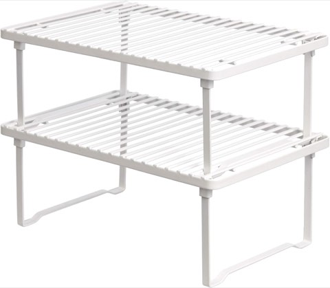
Amazon Basics Space-Saving Stackable Metal Kitchen Cabinet Organizer Shelves, White
Shop on AmazonHow to Organise Your Pantry So It Stays That Way
The real trick is building a system that requires almost no thought.
Every item needs a home. Every category needs enough space. Every new grocery item needs to follow the same rule the moment it enters the pantry.
I keep the simplest rule possible: take something out, use it, then put the replacement back in the exact same place.
That sounds almost ridiculously basic, but simple systems tend to survive far longer than complicated ones.
I also keep a small amount of empty shelf space on purpose, which gives me room to shuffle things around whenever my shopping habits shift. The USDA's sanitation guidance makes basically the same point for commercial kitchens, stressing that dry storage areas should stay orderly and clean, and the same logic holds just as well at home. The pantry doesn't need to look perfectly styled every single day. It just needs to stay functional.
Common Pantry Organisation Mistakes
Even a beautiful pantry can turn into extra work if the system fights against you.
Ignoring Food Safety
A pantry should stay cool, dry, clean, and protected from moisture and pests. USDA guidance specifically calls for the right dry-storage conditions and for checking packaging regularly for any damage.
Also remember that not every food actually belongs in the pantry. Follow the label and the storage instructions, especially once something's been opened.
Hiding Everything Behind Decorative Bins
Pretty storage can quietly create a visibility problem.
If you can't see what you actually own, you'll eventually forget about it. Use clear containers or open bins for anything you need to keep an eye on regularly.
Creating Categories That Feel Too Specific
You don't need a separate bin for every tiny food group that exists.
If you rarely use something, a broader category makes more sense than a hyper-specific one. The best system feels obvious without ever needing a set of instructions.
Buying Too Many Matching Containers
Matching containers look great, but you don't need to decant every single food item you own into one.
Use them where they genuinely improve visibility, freshness, stacking, or access. Keep packaged products in their original packaging whenever transferring them offers little real benefit.
How to Keep Your Pantry Organised
Organising a pantry once feels satisfying. Keeping it organised just requires a tiny bit of ongoing maintenance.
I do a quick reset every time I bring groceries home. Newer items go behind older ones, and everything gets returned to its own category. None of this needs to turn into another giant weekend project.
Keep a Simple Shopping List
The moment I notice something running low, it goes straight onto the shopping list.
This is far more reliable than trying to remember everything while standing in the grocery store wondering whether there are already three jars of peanut butter hiding somewhere back home.
Do a Monthly Pantry Reset
Once a month, I spend roughly 10 to 15 minutes checking through the whole pantry.
- Nearly empty containers
- Duplicate products
- Damaged packaging
- Expired or poor-quality food
- Ingredients you forgot about
- Items that need restocking
A short monthly reset like this keeps the pantry from slowly drifting back into chaos.
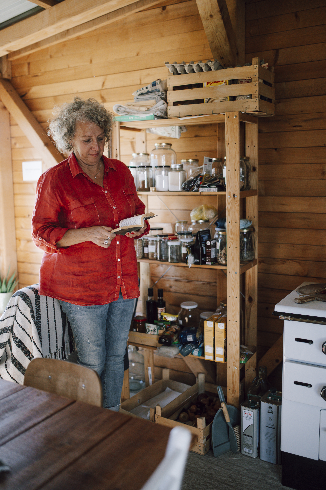
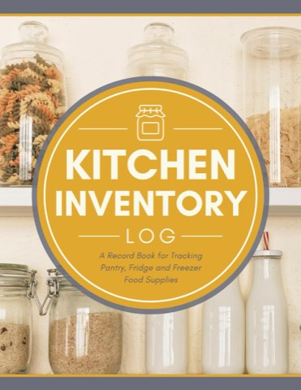
Kitchen Inventory Log Book for Tracking Pantry, Fridge and Freezer Supplies
Shop on AmazonHow to Organise Your Pantry for Easy Meal Prep
Your pantry should genuinely support the way you cook, not just look tidy on its own.
If pasta is a regular thing, keep pasta, canned tomatoes, sauces, herbs, and seasonings near each other. If baking happens often, keep those staples grouped somewhere easy to reach.
Think about your most common meals first, then build the organisation around those meals rather than around food type alone. This approach ends up feeling far more practical day to day.
I even keep a small "quick dinner" zone stocked with:
- Pasta
- Rice
- Canned beans
- Tomato sauce
- Stock
- Noodles
- Common seasonings
On a rushed night, that one little section saves me from opening every cupboard in the kitchen one by one.
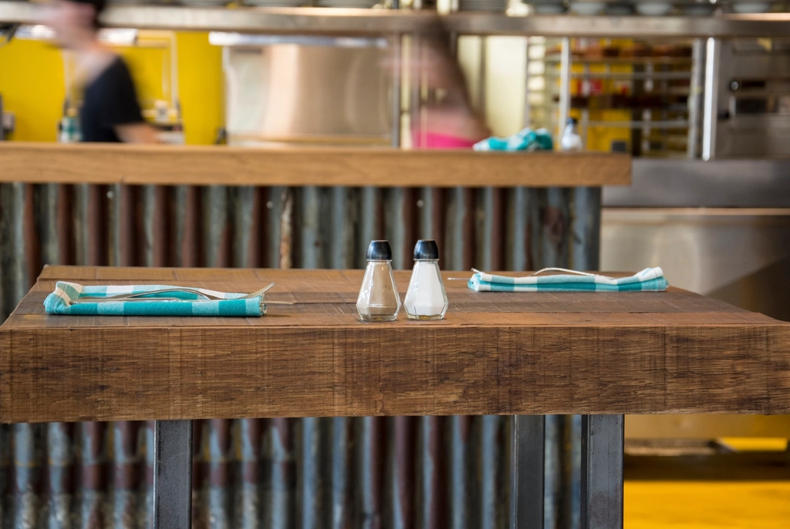
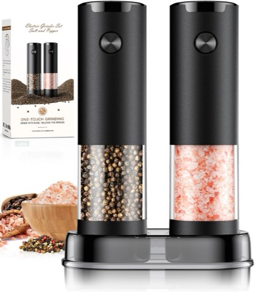
Electric Salt and Pepper Grinder Set, Battery Operated, Adjustable Coarseness
Shop on AmazonHow to Organise Your Pantry Using FIFO
One of my favorite pantry habits is first in, first out, usually shortened to FIFO.
When a new package of something I already have comes home, the older package moves to the front and the new one goes behind it.
That one simple habit means older products get used before newer ones, instead of the other way around.
Restaurants and professional kitchens lean heavily on organised stock rotation because it makes inventory so much easier to track, and the same basic idea works just as well at home without turning your kitchen into a commercial operation. Food safety guidance on reducing waste makes a similar point, essentially that eating or freezing something before it has to be thrown out is the whole goal of rotating stock in the first place.
For anything bought on repeat, this system becomes almost effortless once it turns into a habit.
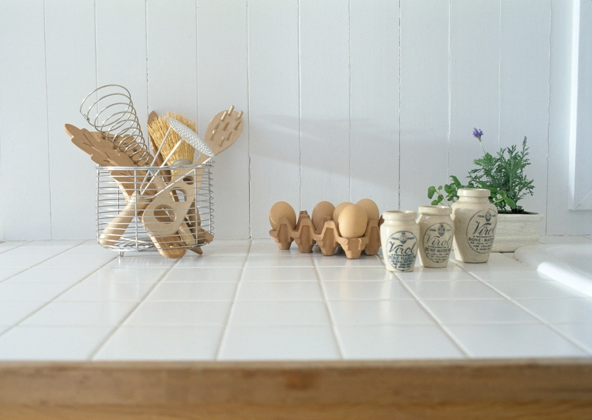
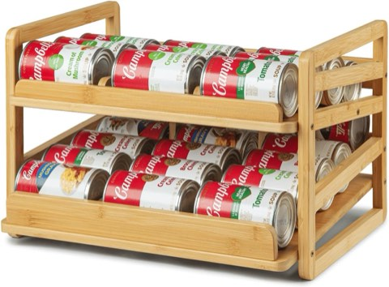
2 Tier Bamboo Rolling Can Rack Organizer for Pantry, Holds Up to 27 Cans
Shop on AmazonHow to Organise Your Pantry With Containers
Containers can make a pantry look dramatically cleaner, but you don't actually need to transfer everything into one.
I save containers for foods that genuinely benefit from better visibility and protection, things like flour, rice, pasta, cereal, oats, sugar, and dry beans.
Label Everything Clearly
A clear container doesn't always need a label, but labels help the moment ingredients start looking similar to each other.
Labels also create a consistent system when more than one person uses the same pantry.
You can label by ingredient, category, or both; "Rice," "Pasta," and "Baking" keep things simple enough for anyone to follow.
Just don't turn the pantry into a filing cabinet. If finding the cinnamon requires a spreadsheet, something's gone slightly too far.
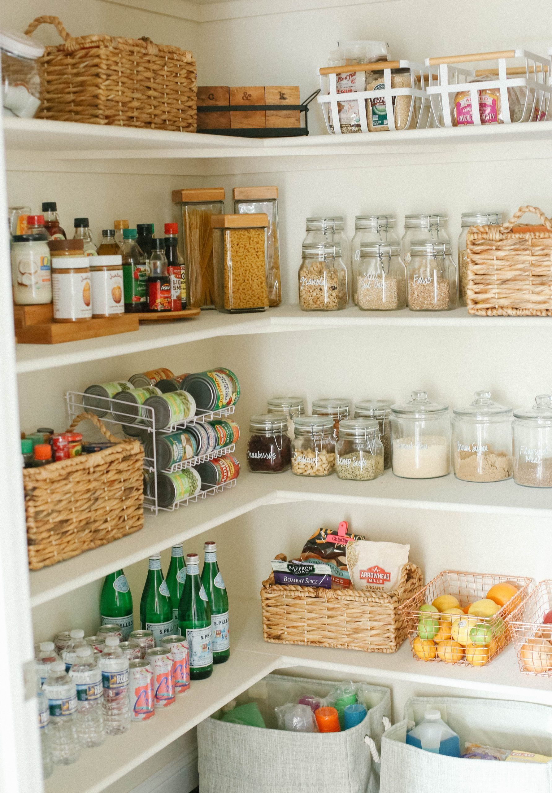
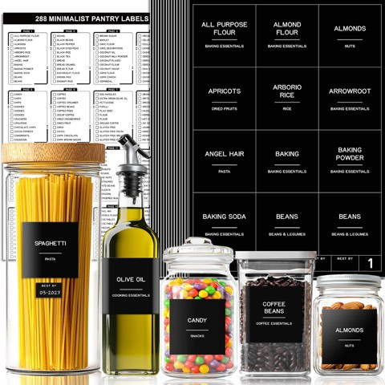
288 Preprinted Waterproof Pantry Labels for Food Containers, Black Minimalist
Shop on AmazonChoose Containers for Function
Look for containers that seal tightly, stack easily, fit your actual shelves, make the contents visible, open easily, and clean without hassle.
Avoid buying containers before measuring your shelves. That sounds obvious, yet people regularly buy gorgeous storage products that end up fitting absolutely nowhere.
Measure shelf height, depth, and width first, then choose containers that actually make the most of that space.
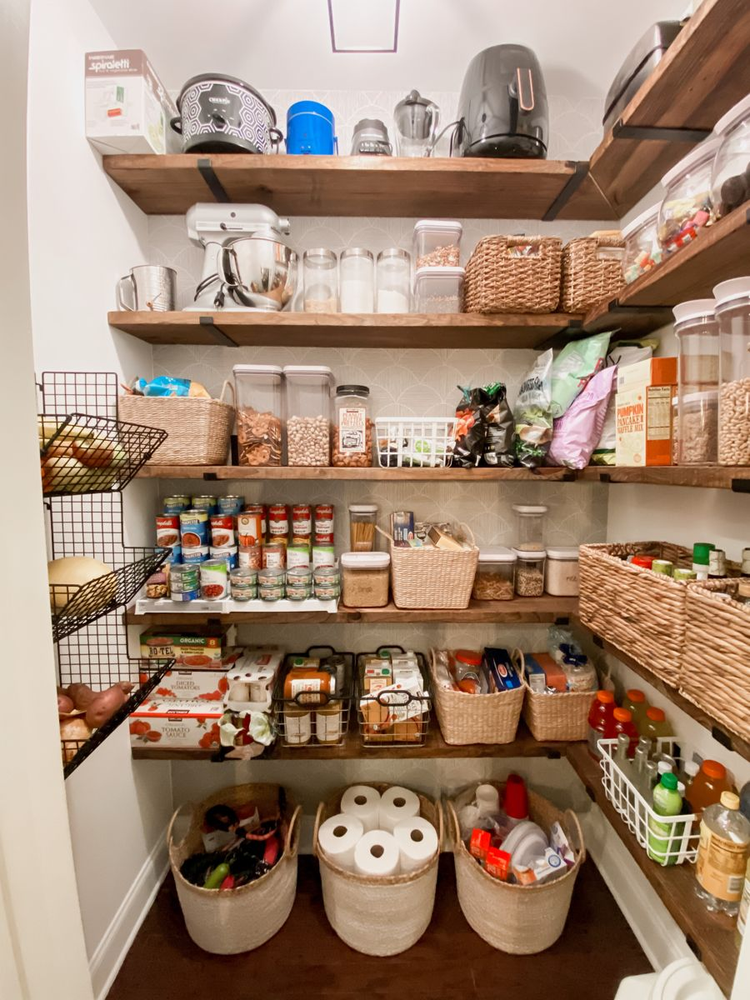
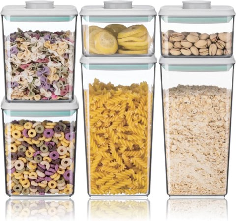
Ankou Airtight Food Storage Container Set, 6 Pcs POP Containers for Pantry
Shop on AmazonHow to Organise a Small Pantry
A walk-in pantry was never the requirement for a functional system. Small pantries often benefit even more from clear categories, since there's less room to hide the mess.
Use vertical space wherever possible. Shelf risers, stackable bins, and tiered shelves all help you actually see items that would otherwise hide behind taller products.
Shallow bins work well for small packets too. Instead of digging through a whole shelf looking for taco seasoning or gravy mix, you can pull one container out and see everything inside it at a glance.
For a narrow pantry, try grouping foods by how often you reach for them:
- Daily-use foods at the front
- Weekly-use foods in the middle
- Occasional-use foods toward the back
- Backup supplies on higher shelves
The goal isn't squeezing every possible item into every available inch. Leave enough breathing room to actually remove something without triggering a small pantry avalanche.
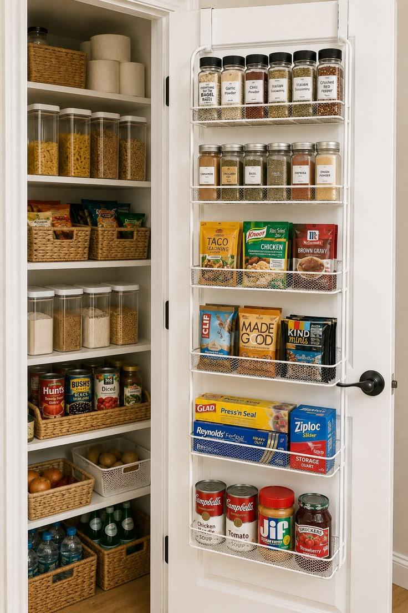
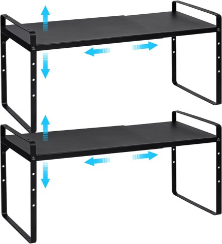
Expandable Kitchen Cabinet Organizer Shelf, 15.5 to 25.5 Inch, 2 Pack, Heavy Duty
Shop on AmazonHow to Organise Your Pantry Shelves
The shelves themselves follow one simple rule: store what you use most often wherever it's easiest to see and reach.
Use Upper Shelves for Backstock
Do you really need three unopened bags of flour sitting right at the front?
Keep extra and rarely used products toward the back or up on higher shelves, just make sure you actually remember they're there.
A simple label reading BACKSTOCK helps prevent the classic "I forgot I bought that" moment a few months later.
Use Lower Shelves for Heavy Items
Cans, large jars, bottles, and bulk ingredients can make a shelf unnecessarily difficult to manage if they're placed wrong.
Keep heavier items lower whenever you can. That makes them easier to handle, and it frees up eye-level shelves for lighter everyday foods instead.
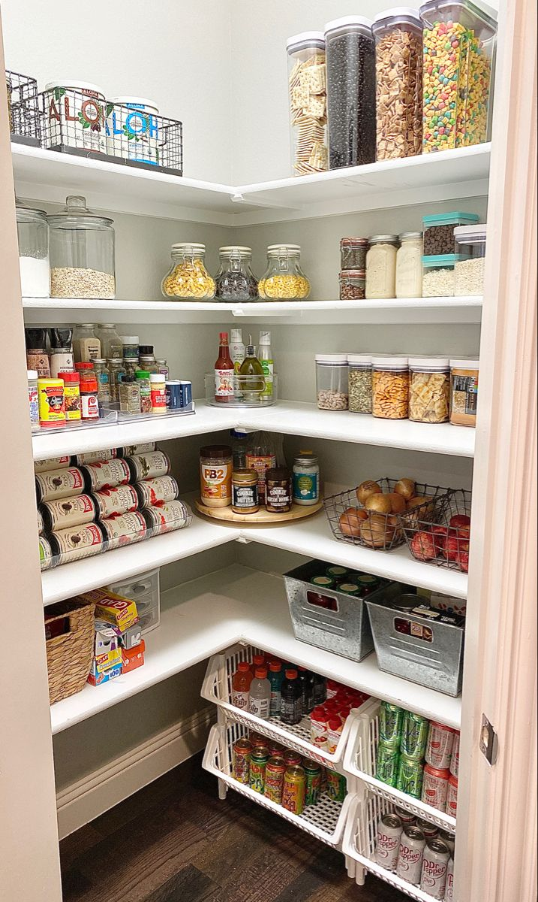
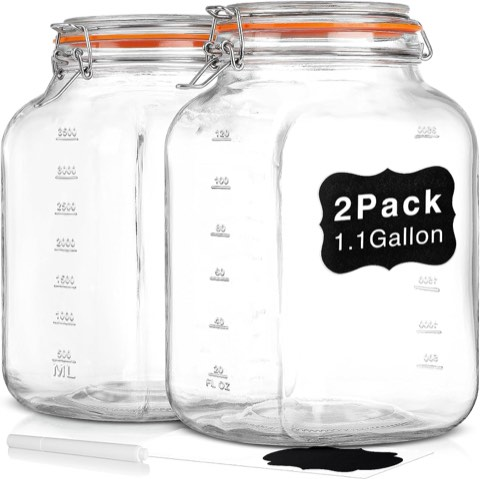
Qianfenie 1.1 Gallon Wide Mouth Airtight Glass Storage Jars with Lids, 2 Pack
Shop on Amazon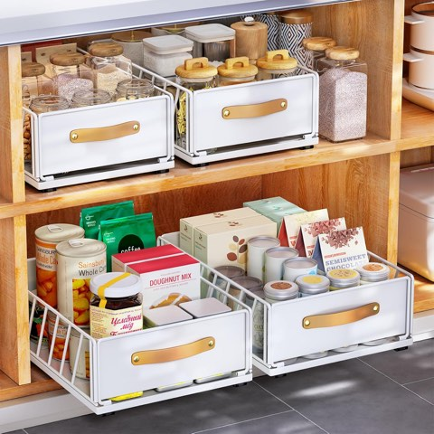
Heavy Duty Pull Out Cabinet Organizer, Slide Out Pantry Shelves Drawer Storage
Shop on AmazonKeep Everyday Foods at Eye Level
Breakfast foods, coffee, snacks, pasta, and other regular staples belong in the easiest-to-reach spots in the whole pantry.
You shouldn't need a step stool to grab the cereal you eat every single morning. Save the higher shelves for occasional-use ingredients and backup supplies instead.
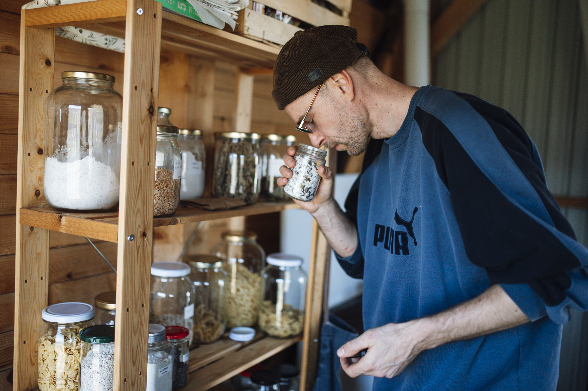
How to Organise Your Pantry by Zones
Once you actually know what you have, build zones based on food categories and everyday use rather than package size.
I find zones far easier to maintain than organising by how things look. When I'm cooking, I'm thinking "where's my pasta stuff?", not "where did I put that tall beige box?"
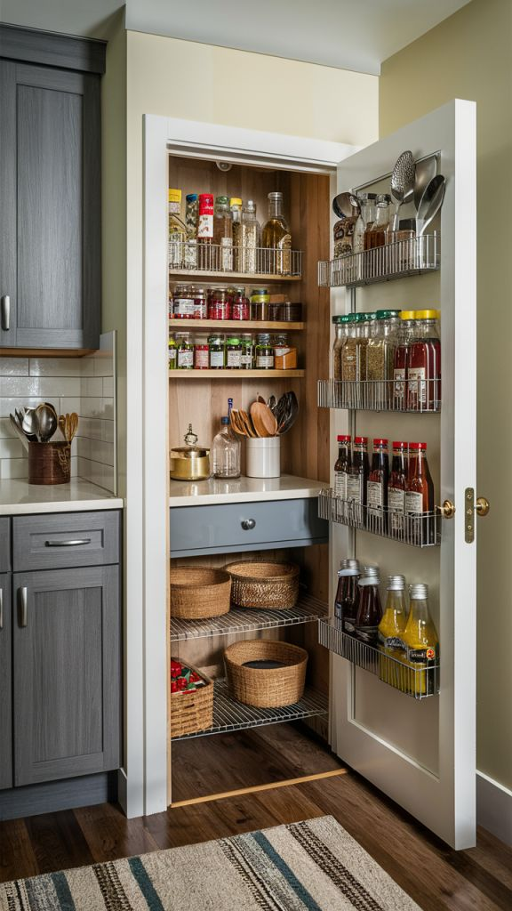
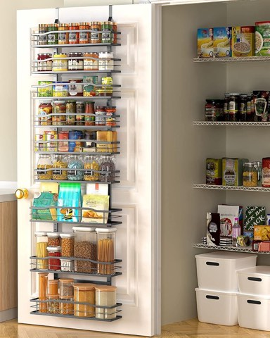
Moforoco 9-Tier Over The Door Pantry Organizer, Black Metal Hanging Baskets
Shop on Amazon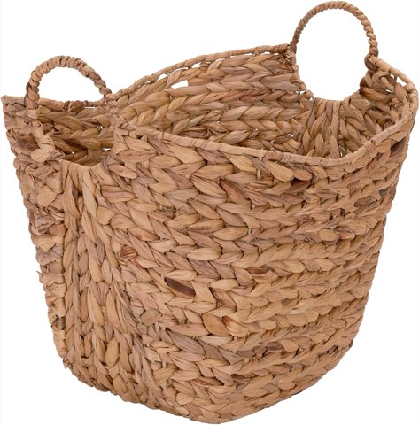
Household Essentials Tall Water Hyacinth Wicker Basket with Handles, Natural
Shop on AmazonCreate a Snack Zone
Give snacks their own dedicated area instead of letting them scatter across the whole pantry.
Baskets work well for granola bars, crackers, chips, nuts, and individually packaged snacks, and they make it easy to pull several items forward at once.
If kids use the pantry too, put their everyday snacks somewhere they can safely reach on their own.
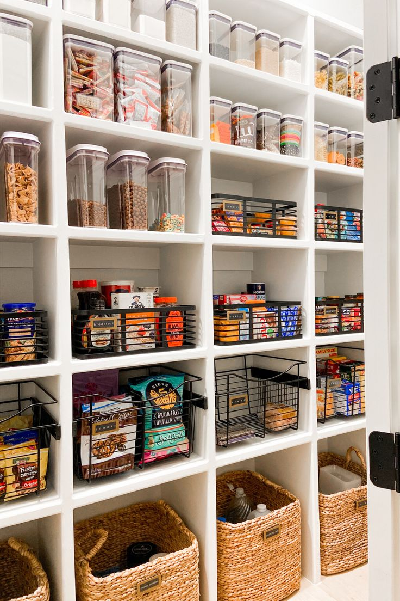
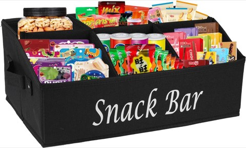
Fabric Snack Bar Organizer with Handles, 6 Compartments, Countertop Snack Station
Shop on AmazonCreate a Pasta and Grain Zone
Group pasta, rice, quinoa, couscous, noodles, and similar foods together in one spot.
If you're using clear containers, label them clearly. Don't rely on memory alone to identify every white powder and grain six months down the line.
Clear containers work especially well for foods you buy on repeat, since you can see at a glance when supplies are actually running low.
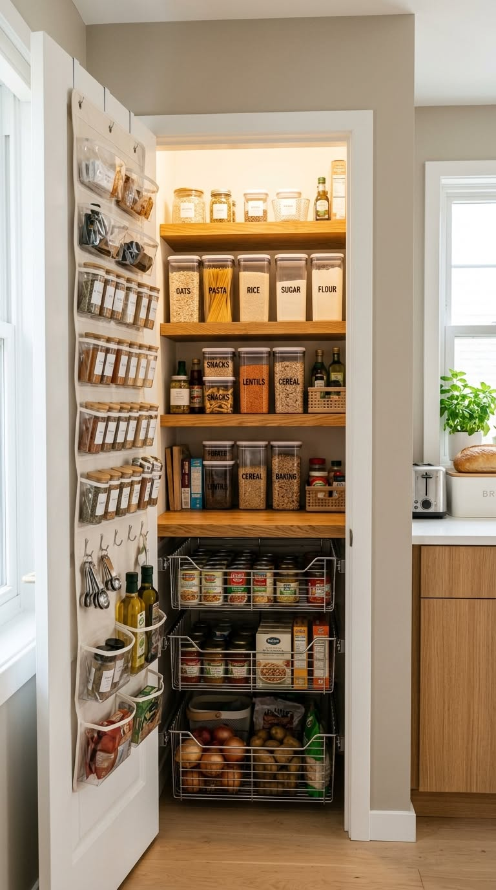
Create a Baking Zone
Keep flour, sugar, baking powder, baking soda, cocoa, chocolate chips, sprinkles, and other baking ingredients grouped together.
A small bin keeps packets and smaller ingredients from spreading across the whole shelf, and labels make the category obvious at a glance.
I especially like this one because baking ingredients tend to come in awkward little packets that can make a single shelf look chaotic within seconds.
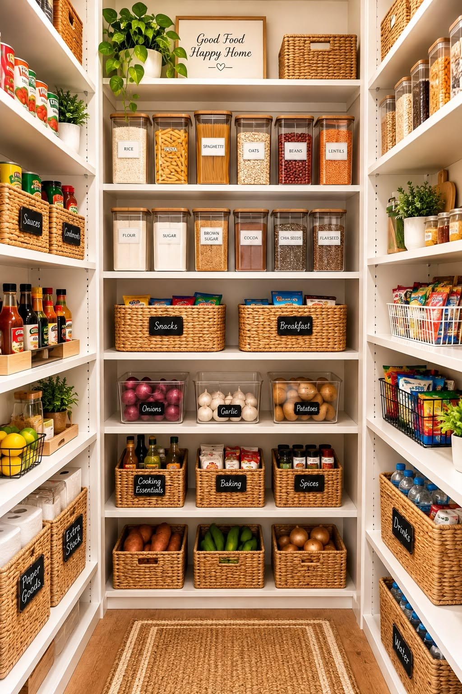
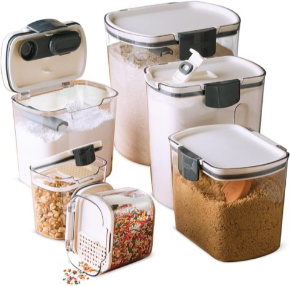
Progressive ProKeeper Baker's Airtight Storage Canister Set for Flour and Sugar
Shop on AmazonCreate a Breakfast Zone
Keep cereals, oats, pancake mixes, spreads, coffee, and tea together if these get used regularly.
Place the breakfast items you reach for most around eye level. Push less frequently used products higher up or further back.
If several people share the pantry, keep the everyday breakfast foods somewhere everyone can grab easily without asking.
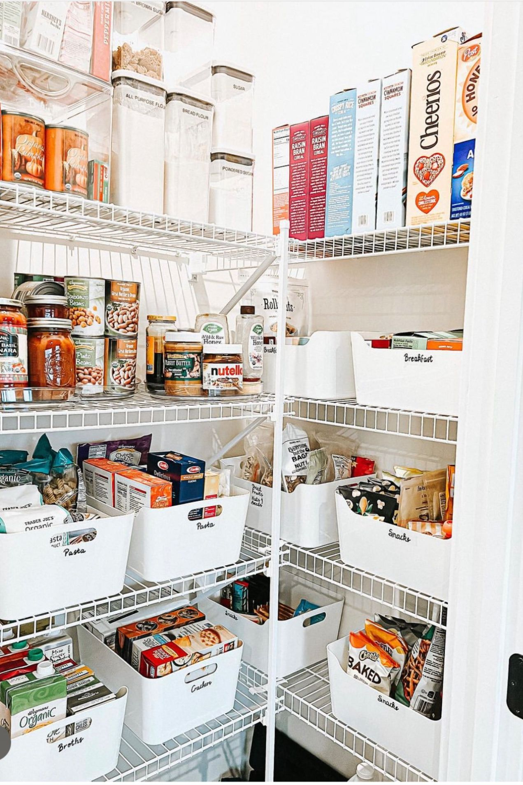
How to Organise Your Pantry Before Buying Containers
This part feels far less glamorous, but it makes the biggest difference of anything on this list. Don't start by buying twenty acrylic bins just because a beautifully organised pantry online convinced you that you suddenly need them too.
Clean the Shelves
Vacuum the crumbs out of the corners and wipe the shelves down before putting anything back. Let them dry completely before adding food again.
This step also gives you a chance to spot leaks, moisture, insects, or damaged packaging early. Trust me, finding a mysterious sticky patch before you reorganise beats finding it by accident six months later.
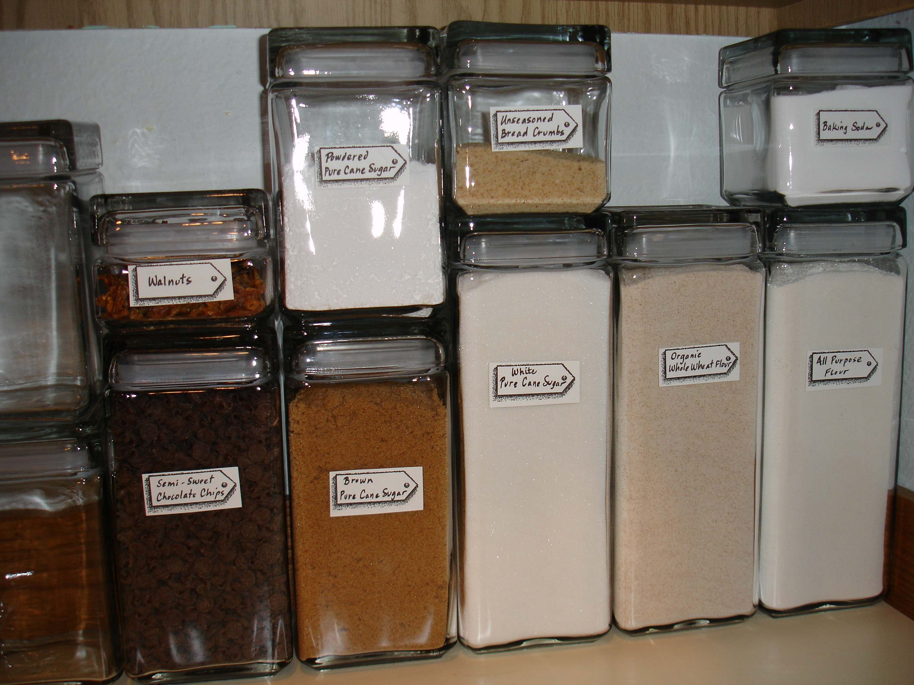
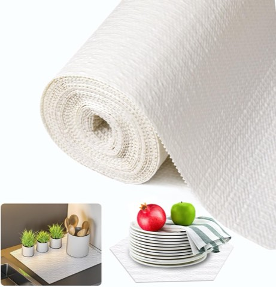
Beautysaid Non-Adhesive Non-Slip Shelf and Drawer Liner for Kitchen Cabinets
Shop on Amazon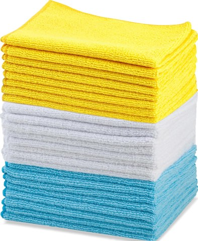
Amazon Basics Microfiber Cleaning Cloths, Lint Free, Streak Free, Reusable
Shop on AmazonCheck Dates and Condition
Go through every package looking for anything expired, damaged, damp, or affected by pests. Standard food-safety guidance recommends checking dry-food packaging for holes and keeping dry foods protected from moisture in general.
Don't automatically treat every printed date as a hard safety deadline, either. Many date labels are really about quality rather than safety, though it's still worth following whatever storage guidance applies to that specific product and using good judgment on top of it. Government food-storage tools exist specifically to help sort out recommended storage times for individual foods and beverages, which is worth a quick check if you're ever unsure.
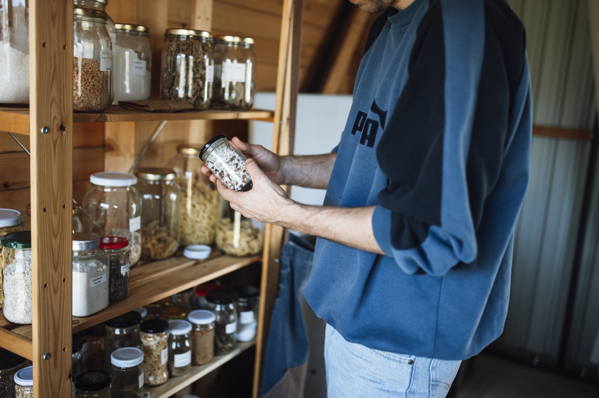
Empty the Pantry Completely
Take everything out and spread it across a counter, table, or clean floor area. An empty set of shelves gives you a far better sense of how much space you're actually working with.
As items come out, group similar foods together as you go. Every pasta package in one pile, every canned food in another, every baking ingredient together in a third.
You might discover you own four separate bags of rice with absolutely no memory of how that happened.
What Should You Keep in a Pantry?
Before organising anything, decide what actually belongs in there in the first place. I think of a pantry as a working food zone, not a catch-all storage room for every random kitchen item.
Shelf-stable foods generally include things like rice, pasta, flour, sugar, spices, oils, canned foods, and other items that don't need refrigeration until they're opened.
You can split a pantry into broad categories such as:
- Breakfast foods
- Pasta, rice, and grains
- Baking ingredients
- Canned foods
- Snacks
- Sauces and condiments
- Spices and seasonings
- Oils and vinegars
- Tea, coffee, and drinks
- Backstock and unopened extras
You don't need every single category if your pantry doesn't actually contain those foods. Why build out a whole "baking zone" if you bake maybe twice a year?
The best system reflects your actual grocery habits, not somebody else's dream pantry from a magazine spread.
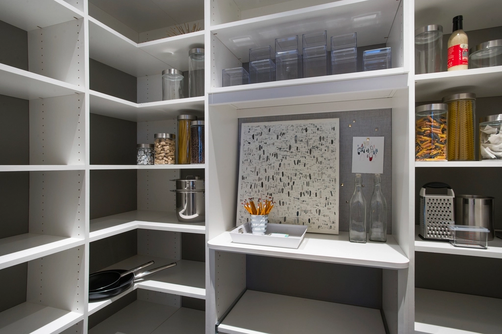
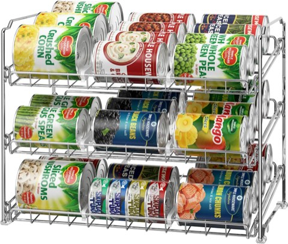
Simple Houseware 3-Tier Stackable Can Organizer Rack, Holds 36 Cans, Chrome
Shop on AmazonWhy Does Pantry Organisation Matter So Much?
A well-organised pantry saves more than just space. It saves time, cuts down on duplicate purchases, and helps you actually notice food before it gets forgotten at the back of a shelf.
I notice the difference most when I group ingredients by how I actually use them rather than by appearance. Pasta, rice, sauces, and canned tomatoes make a lot more sense grouped together once you realize how often they end up in the same quick dinner.
Good pantry organisation should answer three questions quickly:
- What do I have?
- Where does each item belong?
- What should I use first?
That sounds simple, but those three questions genuinely change the entire way you use the space.
Standard food-safety guidance recommends storing dry foods in a cool, clean, dry place and checking packaging regularly for holes or moisture that could affect quality, along with using airtight plastic or glass containers for extra protection where it makes sense.
That advice holds up even if your pantry looks nothing like those perfectly styled kitchen photos online. Pretty shelves mean very little if the flour's picked up moisture or the cereal's gone stale behind them.
SKTEET Set of 8 Clear Plastic Stackable Storage Bins for Pantry Organization
Shop on AmazonLAMU 2 Tier Lazy Susan Turntable Organizer for Cabinet, 9.25 Inch
Shop on AmazonFinal Thoughts on Organising a Pantry
None of this requires a huge budget or a massive kitchen makeover. Start by emptying the shelves, checking the food, cleaning the space, and grouping ingredients into practical zones that actually make sense for how you cook.
Then place everyday foods within easy reach, keep heavy items lower, use containers where they genuinely help, and rotate older food toward the front as new groceries come in.
Most importantly, build the whole system around your real life. If pasta happens three times a week, make it easy to grab. If baking happens once every six months, don't hand over half the pantry to flour and sprinkles just in case.
A good pantry makes cooking easier, grocery shopping smarter, and forgotten food a lot less common.
And if yours somehow stays perfectly organised for more than a week straight, congratulations, you've officially achieved what the rest of us consider kitchen-level sorcery.